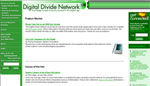
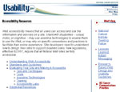

Digital Divide Resources
The "digital divide" refers to the gap between those who have access to and use computers, the Internet, and other information technologies, and those who do not.
The reports, Web sites, and other resources described below provide background information and recent data about the digital divide and related issues. This site will be updated as new information is released.
For information on the related topic of cancer health disparities, see Health Disparities Resources.
On this Page:
- Background
- Data (Usage)
- Digital Divide Pilot Projects (NCI)
- Populations
- People With Disabilities
- People With Low Literacy Skills
- Race/Ethnic Groups
- Seniors
- Students/Children/Teens
- Social Class (Income, Education, and Occupation)
- Web Sites
BACKGROUND
General Issues
Characteristics and Choices of Internet Users (GAO-01-345)
- General Accounting Office
February 2001
This report concludes that survey results support the perception that access to and use of the Internet are influenced by a person's race, education, and income level. Geographic divisions do not appear to be a factor, except that there is less broadband (high-speed) availability in the more rural areas of the country.
http://www.gao.gov/new.items/d01345.pdf
 Digital Divide Network
- Benton Foundation
http://www.digitaldivide.net/
Home Computers and Internet Use in the United States: August 2000
- U.S. Department of Commerce
September 2001
http://www.census.gov/prod/2001pubs/p23-207.pdf
Inclusion in the Information Age: Reframing the Debate
- Athena Alliance
October 2001
This report summarizes and elaborates on a conference the Athena Alliance held in February 2000 on "New IT - New Equity - New Economy." The group concludes from the conference and subsequent events that we must move from the "divide" in "digital divide" to "inclusion" as the central organizing principle of analysis and actions.
http://athenaalliance.org 
A Nation Online: How Americans are Expanding Their Use of the Internet
- U.S. Department of Commerce
February 2002
This report – based on data from the Census Bureau's September 2001 Current Population Survey – says that Internet use is increasing for people regardless of income, education, race, ethnicity, or gender.
http://www.ntia.doc.gov/ntiahome/dn/nationonline_020502.htm
National Telecommunications and Information Administration
- U.S. Department of Commerce
This link leads to "Previous Statistical Reports on Computer and Internet Use in the U.S." -- the digital divide/digital inclusion reports issued 1995-2000 by the National Telecommunications and Information Administration.
http://www.ntia.doc.gov/opadhome/digitalnation/index.html#Previous
Pew Internet & American Life Project
- Pew Research Center
The Pew Internet & American Life Project funds research that explores the impact of the Internet on children, families, communities, the work place, schools, health care, and civic/political life. For Pew Internet Project reports, go to
http://www.pewinternet.org/Topics.aspx  .
.
For the Project's survey datasets, see
http://www.pewinternet.org/Data-Tools/Download-Data/Data-Sets.aspx  .
.
State of the Internet 2001
- United States Internet Council
November 12, 2001
This is the third annual report in a series that examines the growth of the Internet and explores the legal, business, and social trends in the online world. A news release, executive summary, and PowerPoint slides are online, but the full report must be purchased.
UCLA Internet Report: Surveying the Digital Future - Year Two
- UCLA Center for Communication Policy
November 29, 2001
This is the second of UCLA's annual reports to examine how the Internet influences social, political, cultural, and economic behavior and ideas, as measured by the attitudes, values, and perceptions of both Internet users and non-users.
http://www.digitalcenter.org/pdf/InternetReportYearTwo.pdf 
Global Issues
Final Report of the Digital Opportunity Task Force: Digital Opportunities for All
- Digital Opportunity Task Force
May 2001
This is the final report of the Digital Opportunity Task Force, created by the G8 Heads of State at their Kyushu-Okinawa Summit in July 2000. The Task Force brought together 42 teams from government, the private sector, non-profit organizations, and international organizations, representing both developed and developing countries, in a cooperative effort to identify ways in which the digital revolution can benefit all the world's people, especially the poorest and most marginalized groups.
http://www.g7.utoronto.ca/summit/2001genoa/dotforce1.html 
DATA (USAGE)
Characteristics and Choices of Internet Users (GAO-01-345)
- General Accounting Office
February 2001
This report concludes that survey results support the perception that access to and use of the Internet are influenced by a person's race, education, and income level. Geographic divisions do not appear to be a factor, except that there is less broadband (high-speed) availability in the more rural areas of the country.
http://www.gao.gov/new.items/d01345.pdf
Home Computers and Internet Use in the United States: August 2000
- U.S. Department of Commerce
September 2001
This report uses Current Population Survey data to address some of the primary questions raised by the nation's changing technological base.
http://www.census.gov/prod/2001pubs/p23-207.pdf
 More Online, Doing More
More Online, Doing More
- Pew Internet & American Life Project
February 18, 2001
According to this report, 16 million newcomers gained Internet access in the last half of 2000 as women, minorities, and families with modest incomes continued to surge online.
http://www.pewinternet.org/Reports/2001/More-Online-Doing-More.aspx 
A Nation Online: How Americans are Expanding Their Use of the Internet
- U.S. Department of Commerce
February 2002
This report – based on data from the Census Bureau's September 2001 Current Population Survey – says that Internet use is increasing for people regardless of income, education, race, ethnicity, or gender.
http://www.ntia.doc.gov/ntiahome/dn/nationonline_020502.htm
Online Communities
- Pew Internet & American Life Project
October 31, 2001
Results of a Pew survey suggest that the online world is a vibrant social universe where many Internet users enjoy serious and satisfying contact with online communities. Many who join online groups are relative newcomers to the Internet and tend to be urban dwellers, young adults, and less well-educated than the typical Internet user.
http://www.pewinternet.org/Reports/2001/Online-Communities.aspx 
Scientific Research on the Internet
- University of Maryland, Department of Sociology
Funded by The National Science Foundation, this Web site is part of an effort to develop a set of resources to further the scientific study of the impact of the Internet on societies. The site includes a number of survey datasets that concern Internet usage, including August 2000 CPS Data and the General Social Survey 2000.
http://www.webuse.umd.edu 
Time Online
- Pew Internet & American Life Project
July 16, 2001
According to this report, there is considerable variation among the Internet population regarding the amount of time they spend online. The report finds that women are more likely than men to say they spend more time online. Also, relatively well-to-do Internet users are more likely than those with modest incomes to say they spend more time online.
http://www.pewinternet.org/Reports/2001/Time-Online.aspx 
UCLA Internet Report 2001: Surveying the Digital Future - Year Two
- UCLA Center for Communication Policy
November 29, 2001
This is the second of UCLA's annual reports to examine how the Internet influences social, political, cultural, and economic behavior and ideas, as measured by the attitudes, values, and perceptions of both Internet users and non-users.
http://www.digitalcenter.org/pdf/InternetReportYearTwo.pdf 
Who's Not Online
- Pew Internet & American Life Project
September 21, 2000
This report examines the reasons 57% of those without Internet access say they do not plan to log on. The "gray gap," gender, race, ethnicity, and geography (rural areas) are among the factors examined.
http://www.pewinternet.org/Reports/2000/Whos-Not-Online.aspx 
DIGITAL DIVIDE PILOT PROJECTS (NCI)
Digital Divide Pilot Projects
Searching for Cancer Information on the Internet: A New Project in Harlem
- United Way of New York
This article describes "Bridging the Digital Divide Project: Your Access to Cancer Information," a one-year pilot project created by the Cancer Information Service of New York and funded by NCI. The project is designed to teach people in low-income communities how to find cancer information on the Internet through hands-on workshops.
http://www.uwnyc.org/technews/pf_v4_n6_a6.html 
POPULATIONS
People With Disabilities
Accessibility Resources
- Communication Technologies Branch, Office of Communications
NCI
Section 508 of the Rehabilitation Act, recently amended, requires that federal agencies' electronic and information technology be accessible to people with disabilities. Consult the Accessibility Resources of NCI's Usability.gov site for links to Section 508 federal requirements, accessibility guidelines, tools, articles, and software.
http://www.disabilityinfo.gov/digov-public/public/DisplayPage.do?parentFolderId=500
Computer and Internet Use Among People With Disabilities
- Disability Statistics Center
March 2000
This report demonstrates that gaps in computer and Internet use based on disability status are just as large as those based on race and ethnicity.
http://dsc.ucsf.edu/pdf/report13.pdf 
The Growing Digital Divide In Access For People With Disabilities
- Cynthia D. Waddell, J.D.
May 1999
This white paper addresses legal and policy issues affecting the ability of people with disabilities to participate in the digital economy.
http://www.icdri.org/CynthiaW/the_digital_divide.htm 
People With Low Literacy Skills
Online Content for Low-Income and Underserved Americans: The Digital Divide's New Frontier
- The Children's Partnership
March 2000
This report describes the groups of Americans who are underserved by Internet content, including what they want and the barriers they face. It also analyzes the current content for these groups, focusing on the major gaps and opportunities, and identifies solutions.
http://www.childrenspartnership.org/pub/low_income/index.html 
Race/Ethnic Groups
 African-Americans and the Internet
African-Americans and the Internet
- Pew Internet & American Life Project
October 22, 2000
The gap between black and white access to the Web is closing, concludes this report.
http://www.pewinternet.org/Reports/2000/AfricanAmericans-and-the-Internet.aspx 
Asian-Americans and the Internet: The Young and the Connected
- Pew Internet & American Life Project
December 12, 2001
Asian Americans who speak English are more experienced and active Internet users than Whites, African Americans, or Hispanics, this study concludes.
http://www.pewinternet.org/Reports/2001/AsianAmericans-and-the-Internet.aspx 
 Ethnicity in the Electronic Age: Looking at the Internet Through Multicultural Lens
Ethnicity in the Electronic Age: Looking at the Internet Through Multicultural Lens
- The Cultural Access Group, Access Worldwide Communications, Inc.
January 2001
This report looks at the access, usage, and attitudes of ethnic Internet users, especially African Americans and Hispanics.
http://www.multicultural.com/archives/newsletter/01_1112.html 
Hispanic Internet Usage Profile
- Roslow Research Group
February 2002
Among Hispanics 16 years of age and older, half are using the Internet, according to this report based on a November-December 2001 survey.
http://www.roslowresearch.com/ 
Hispanics and the Internet
- Pew Internet & American Life Project
July 25, 2001
Half of Hispanic adults use the Internet and e-mail, according to this Pew survey. The online Hispanic population grew 25% over a period of 12 months, as young people, women, and those from modest income households flocked online.
http://www.pewinternet.org/Reports/2001/Hispanics-and-the-Internet.aspx 
Indiantech.org
- National Congress of American Indians
In June 2000, the National Congress of American Indians (NCAI) received a grant from the AOL-Time Warner Foundation to provide national leadership for tribal nations that are attempting to bridge the digital divide in their communities. The NCAI Digital Divide Task Force is working with tribes to develop strategic partnerships and policy recommendations to provide technology access, education and training, and economic development to Indian Country. This Web site is part of these efforts.
http://www.indiantech.org 
Minority Links
- U.S. Census Bureau
This site links to facts on the following populations: Black/African American, Hispanic/Latino, Asian/Pacific Islander, and American Indian/Alaska Native. Links are organized under Census 2000, Social Characteristics, Economic Characteristics, Profiles, News Releases, and Related Topics.
http://www.census.gov/pubinfo/www/hotlinks.html
Shaping the Destiny of Native American People by Ending the Digital Divide
- EDUCAUSE Review
January-February 2001
Ending the digital divide in Indian country requires allowing tribal communities to craft their own solutions based on their unique environments and needs, concludes this article.
http://www.educause.edu/ir/library/pdf/erm0112.pdf 
Seniors
Older Adults and the World Wide Web: A Guide for Web Site Creators
- SPRY Foundation
1999
This 30-page guide reports best practices as described in a national conference in March 1999. Specific guidelines and ideas are presented for the creation of Web sites that are user-friendly for older adults. The goal is to help site managers and designers better reach older adults and avoid some of the common mistakes that make Web sites inaccessible or problematic for this group.
http://www.spry.org/sprys_work/education/web_guide.html 
 Wired Seniors: A Fervent Few, Inspired by Family Ties
Wired Seniors: A Fervent Few, Inspired by Family Ties
- Pew Internet & American Life Project
September 9, 2001
Although only 15% of those 65 years and older are online, they are fervent users of the Internet who love e-mail and often use the Web to gather important information such as material to help them manage their health.
http://www.pewinternet.org/Reports/2001/Wired-Seniors.aspx 
Students/Children/Teens
Internet Access in U.S. Public Schools and Classrooms: 1994-2000
- National Center for Education Statistics, U.S. Department of Education
May 2001
This report provides trend analysis on the progress of public schools and classrooms in connecting to the Internet, the ratio of students to instructional computers and to instructional computers with Internet access, and the types of Internet connections used. It also provides, for the year 2000, information on student access to the Internet outside of regular school hours.
http://nces.ed.gov/pubsearch/pubsinfo.asp?pubid=2001071
 The Internet and Education
The Internet and Education
- Pew Internet & American Life Project
September 1, 2001
The Internet has become an increasingly important feature of the learning environment for teenagers. This survey suggests that school is often the place where those who are less privileged – including children of single parents and those from low-income families – have their primary access to the Internet.
http://www.pewinternet.org/Reports/2001/The-Internet-and-Education.aspx 
SOCIAL CLASS (INCOME AND EDUCATION)
 From Access to Outcomes: Raising the Aspirations for Technology Initiatives in Low-Income Communities
From Access to Outcomes: Raising the Aspirations for Technology Initiatives in Low-Income Communities
- Morino Institute
July 2001
This paper makes the case that technology must not be seen as an end in itself. It concludes that initiatives in and by low-income communities are far better at producing meaningful change when people apply technology with tangible economic, educational, and social end results in mind.
http://www.morino.org/divides/report.pdf 
Online Content for Low-Income and Underserved Americans: The Digital Divide's New Frontier
- The Children's Partnership
March 2000
This report describes the groups of Americans who are underserved by Internet content, including what they want and the barriers they face. It also analyzes the current content for these groups, focusing on the major gaps and opportunities, and identifies solutions.
http://www.childrenspartnership.org/pub/low_income/index.html 
WEB SITES
NCI Sites
Accessibility Resources
- Communication Technologies Branch, Office of Communications
NCI
Section 508 of the Rehabilitation Act, recently amended, requires that federal agencies' electronic and information technology be accessible to people with disabilities. Consult the Accessibility Resources of NCI's Usability.gov site for links to Section 508 federal requirements, accessibility guidelines, tools, articles, and software.
http://www.usability.gov/
Usability.gov
- Communication Technologies Branch, Office of Communications
NCI
Usability.gov is an online resource for designing usable, useful, and accessible Web sites and user interfaces. This site includes new Research-Based Web Design and Usability Guidelines and a special section on accessibility resources.
http://usability.gov
Other Sites
"Bridging the Digital Divide" Enrichment Center
- SeniorNet
This new addition to the SeniorNet Web site was developed to serve as a nexus for the study and discussion of the digital divide for older adults. The site offers articles, research reports, and interactive discussions.
http://www.seniornet.org/php/default.php?PageID=5748&Version=0&Font=0 
CancerInfoNet
- Cancer Information Service (CIS) of New York
This web site was created to provide both consumers and health care professionals with a tailored, easy-to-use interface to credible, trustworthy cancer resources. CancerInfoNet.org has been admired for its simplicity and the fact that the information is available in both English and Spanish. Training manuals are available as a guide to anyone who is interested in conducting cancer workshops.
www.CancerInfoNet.org 
Digital Divide Database
- ConnectNet.org
This searchable data base includes more than 20,000 sites nationwide that provide free or low-cost Internet services at the local level.
http://www.connectnet.org/english/ 
Digital Divide Network
- Benton Foundation
This Web site offers a range of information, tools, and resources to help practitioners stay on top of digital divide developments. It also serves as a forum where practitioners can share their experiences
with colleagues around the world. Sign up for the Digital Divide Discussion List at the home page.
http://www.digitaldivide.net 
Indiantech.org
- National Congress of American Indians
In June 2000, the National Congress of American Indians (NCAI) received a grant from the AOL-Time Warner Foundation to provide national leadership for tribal nations that are attempting to bridge the digital divide in their communities. The NCAI Digital Divide Task Force is working with tribes to develop strategic partnerships and policy recommendations to provide technology access, education and training, and economic development to Indian Country. This Web site is part of these efforts.
http://www.indiantech.org 
Minority Links
- U.S. Census Bureau
This site links to facts on the following populations: Black/African American, Hispanic/Latino, Asian/Pacific Islander, and American Indian/Alaska Native. Links are organized under Census 2000, Social Characteristics, Economic Characteristics, Profiles, News Releases, and Related Topics.
http://www.census.gov/pubinfo/www/hotlinks.html
National Telecommunications and Information Administration
- U.S. Department of Commerce
This link leads to "Previous Statistical Reports on Computer and Internet Use in the U.S." -- the digital divide/digital inclusion reports issued 1995-2000 by the National Telecommunications and Information Administration.
http://www.ntia.doc.gov/opadhome/digitalnation/index.html#Previous
Oxford Internet Institute
- University of Oxford
In May 2001, the University of Oxford announced it is creating the world's first multi-disciplinary center within a major university exclusively devoted to the study of the societal impacts of the Internet. The Institute will encourage and generate activity in three areas: world-class multidisciplinary research, debate and formulation of public policy, and conferencing and communication. This Web site includes background on the Institute, including a news release and frequently asked questions.
http://www.oii.ox.ac.uk 
 Pew Internet & American Life Project
Pew Internet & American Life Project
- Pew Research Center
The Pew Internet & American Life Project funds research that explores the impact of the Internet on children, families, communities, the work place, schools, health care, and civic/political life. For Pew Internet Project reports, go to
http://www.pewinternet.org/Topics.aspx  .
.
For the Project's survey datasets, see
http://www.pewinternet.org/Data-Tools/Download-Data/Data-Sets.aspx  .
.
Policy Information Pipeline: Telecommunications/Information Technology
- Technical Assistance Project
Rehabilitation Engineering and Assistive Technology Society of North America
The RESNA Technical Assistance Project provides technical assistance to the 56 state and territory assistive technology programs as authorized under the Assistive Technology Act of 1998. This Web site includes online resources on Section 508, the digital divide, the Federal Communications Commission, Web accessibility, and other topics.
http://www.resna.org/projects/index.php 
Scientific Research on the Internet
- University of Maryland, Department of Sociology
Funded by The National Science Foundation, this Web site is part of an effort to develop a set of resources to further the scientific study of the impact of the Internet on societies. The site includes a number of survey datasets that concern Internet usage, including August 2000 CPS Data and the General Social Survey 2000.
http://www.webuse.umd.edu 
UCLA Center for Communication Policy
- Anderson Graduate School of Management, UCLA
The UCLA Center for Communication Policy is a forum for the discussion and development of policy alternatives addressing the leading issues in media and communication. The Center conducts and facilitates research, courses, seminars, working groups, and conferences designed to have a major impact on policy at the local, national, and international levels. The Center's Web site includes the UCLA annual Internet report and other information about UCLA's Internet Project.